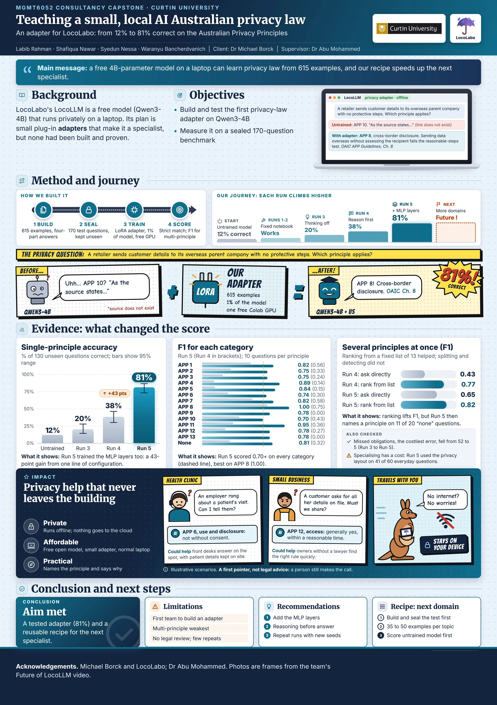
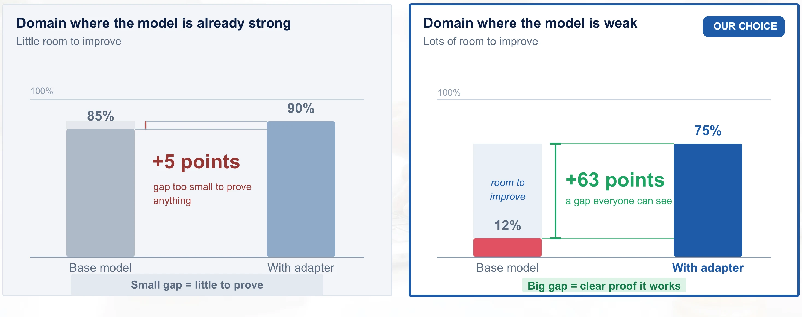
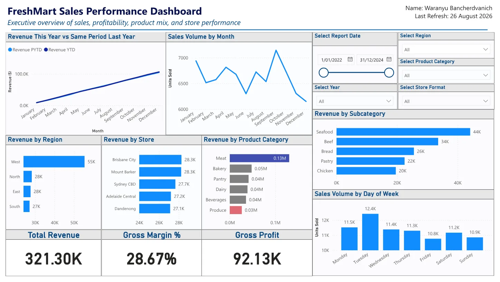

Building and benchmarking a domain-specialist AI model
A consultancy for LocoLabo, a research lab at Curtin Business School. Its LocoLLM project runs a small AI model on an ordinary laptop, free and private, and adds plug-in “adapters” that make it an expert in one subject. Our team was asked to build the first real adapter and prove, with numbers, whether the idea works.
questions after training
sealed from training
across 13 principles
- Test 15 domains
- Seal the benchmark
- 615 training examples
- Train on a free GPU
- Score every run
- Hand over a recipe
1. Overview

2. Context
2.1 What we want to achieve
Same laptop, same base model, same question. One small adapter file makes the difference.
2.2 What is LocoLLM
A project by LocoLabo, a research lab at Curtin Business School: one small open model (Qwen3-4B) that runs privately on your own laptop, plus plug-in adapters that each make it a specialist. No adapter had been built yet, and nobody had proof the idea works at this size.
2.3 Why privacy law was a weak spot
On 20 privacy scenarios the base model scored 10%, about the same as guessing. It knew the law existed but mixed up the principle numbers, and invented its evidence.
2.4 What a good answer looks like
| Without the adapter: base Qwen3-4B | With our adapter: Run 5 | |
|---|---|---|
| Answer | APP 10, which is about data quality, so wrong | APP 8, cross-border disclosure, so right |
| Evidence | A made-up quote and a made-up link | A real reference: OAIC APP Guidelines, chapter 8 |
| Length | 442 words | Four short lines: reasoning, principle, category, citation |
3. Methodology
3.1 Tested the base model on 15 domains
If the base model is already good, a small gain proves nothing. We needed a domain with room to improve.

We asked the untrained model 5 questions in each of 15 business domains. Eleven scored 5 out of 5. Compliance and privacy law scored 0, so the client approved it as our domain.
3.2 Built the dataset
From two official sources to two question sets
Sources
Question sets
Checks
The same question mix in both sets
One training question and its answer
My local florist wanted to charge me a fee just to take me off their mailing list. Which single Australian Privacy Principle, if any, is most directly relevant?
The answer, in the same four parts every time
Category: violation
Applicable APP: APP 7, direct marketing
Reasoning: opting out of direct marketing must be free, so a fee is not allowed
Citation: OAIC APP Guidelines, chapter 7
Build the test before the result
On LocoLLM we sealed a 170-question benchmark before any training. When I found 30 of my training questions described the same situations as test questions, I rewrote them, so the 81% measures what the model learned, not what it memorised.
3.3 Trained the adapter on a free Colab GPU
We changed one setting per run, so every jump has a cause.
Step 6: add the LoRA layer
Freeze the 4 billion base weights, train a small extra layer
model = FastModel.get_peft_model(
model, r=16, lora_alpha=32, lora_dropout=0.05,
target_modules=["q_proj", "k_proj", "v_proj", "o_proj"],
)Step 8: train
615 question-and-answer pairs, 3 passes over the data
trainer = SFTTrainer(model=model, train_dataset=dataset,
args=TrainingArguments(num_train_epochs=3, learning_rate=2e-4,
per_device_train_batch_size=2, seed=42))
stats = trainer.train()4. Key findings
4.1 Accuracy by question type, run by run
Pick a run to see what changed and what it did.
4.2 What each training run changed
| Run | The change | One-principle accuracy | What happened |
|---|---|---|---|
| Untrained | None | 12% | Mixed up the principles |
| Run 3 | The client’s recipe as supplied | 20% | Learned the answer layout, but said “no principle” 52 times when one applied |
| Run 4 | Reasoning first, then the answer | 38% | Wrong “no principle” answers fell from 52 to 1 |
| Run 5 | Train the MLP layers too | 81% | At least 6 out of 10 on every principle |
5. Deliverables and recommendations
5.1 What LocoLab gets
All in the shared repository: the privacy-law adapter, the sealed 170-question benchmark with its scoring script, the 615-example training set, a repaired one-click Colab notebook, and a report on every run.
5.2 Three recommended changes and a six-step recipe
Three recommended changes
| Change | Effect |
|---|---|
| Train the MLP layers too, one line of settings | 38% to 81% |
| Reasoning first, then the answer | Wrong “no principle” guesses: 54 to 5 |
| Test every recipe at least twice | A new random seed flipped 1 answer in 5 |
All three are free: no new data, no new hardware, the same 15-minute training.
The six-step recipe for the next domain
- 1Build and seal the test
- 2Agree one answer format
- 335 to 50 examples per topic
- 4Score the base model first
- 5One change per run
- 6Test more than once
Follow the six steps, and the next team can reach our Run 5 result in week one, not week six.
5.3 What we learned, and what is still open
- Small can be smart: a laptop-sized model learned a narrow domain from 615 examples.
- Format comes before facts: Run 1 used the right layout 169 times but named the right principle only 42 times.
- Still open: questions with several right answers, a lawyer’s sign-off on some answers, and more varied question wording.
